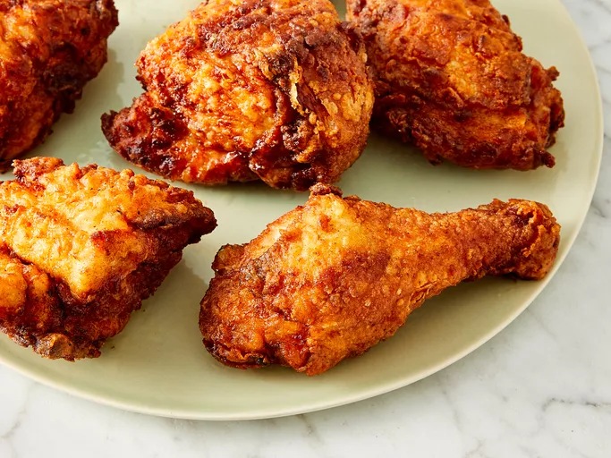
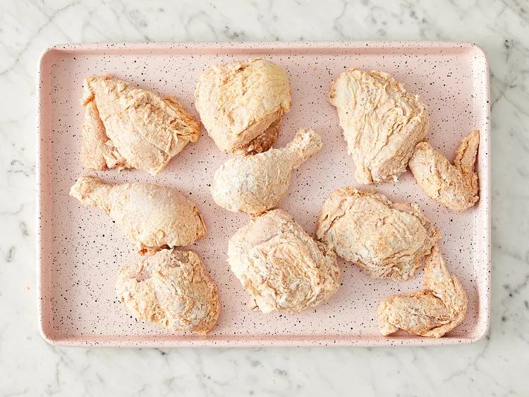

Crispy Fried Chicken
Ingredients
- 1 (4 pound) chicken, cut into pieces
- 1 cup buttermilk
- 2 cups all-purpose flour for coating
- 1 teaspoon paprika
- salt and pepper to taste
- 2 quarts vegetable oil for frying
Directions
- Step 1
Take your cut up cihcken and skin them if you prefer.
- Step 2
Put the floor in a large plastic bad(let the amount of chicken you are cooking dictate the amount of flour you use). Season the floour with paprika, salt and peper to taste (paprika helps to brown the chicken).

- Step 3
Dip chicken pieces in buttermilk then, a few at a time, put them in the bag with the flour, seal the bag and shake to coat well.

- Step 4
Place the coated chicken on a cookie sheet or tray, and cover with a clean dish towel or waxed paper. LET SIT THE FLOUR IS OF A PASTE-LIKE CONSISTENCY. THIS IS CRUCIAL
 - Step 5
Fill a large skillet(cast iron is best) about 1/3 to 1/2 full with vegetable oil. Heat until VERY hot.
- Step 6
Put in as many chicken pieces as the skillet can hold. Brown the chicken in HOT oil on both sides.
- Step 7
When browned, reduce heat and cover skillet; let cook for 30 minutes (the chicken will be cooked through but not crispy). Remove cover, rasie heat again, and continue to fry until crispy.
- Step 8
Drain the fried chicken on paper towels. Depending on how much chicken you have, you may have to fry in a few shifts. Keep the finished chicken in a slightly warm oven while preparing the rest.